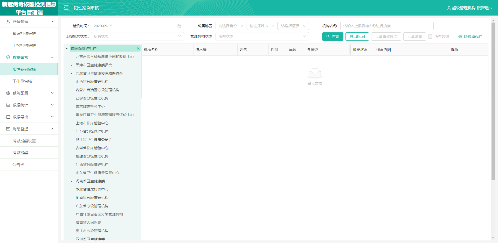

0
1
查看批注
查看批注
1、在如图位置显示“一共 0 条 ，未审核 0 条，已退审0条，已审核0条”，表示的是该管理机构直属的上报机构，一共上报多少条数据，其中未审核、已退审、已审核状态的数据有多少条；
2、“一共有XXXX条数据，其中未审核的数据有XXXX条，已退审的数据有XXXX条，已审核的数据有XXXX条”与当前选择的检测时间、当前登陆的管理机构账号有关，与页面其他筛选条件无关；（比如现在福建省账号省级登录，无论页面其他筛选条件怎么选择，或者点击查看其他管理机构的情况，页面上的“一共有XXXX条数据，其中未审核的数据有XXXX条，已退审的数据有XXXX条，已审核的数据有XXXX条”数据都不会变化，只展示当前选择的检测日期范围内本管理机构机构账号未审核、已退审、已审核状态各有多少条，一共多少条）
0
页面排序逻辑调整：未审核数据在前，然后显示退审数据，最后再显示已审核数据，然后未审核数据按照上报时间倒序排序、退审数据按照上报时间倒序排序、已审核数据按照上报时间倒序排序
1